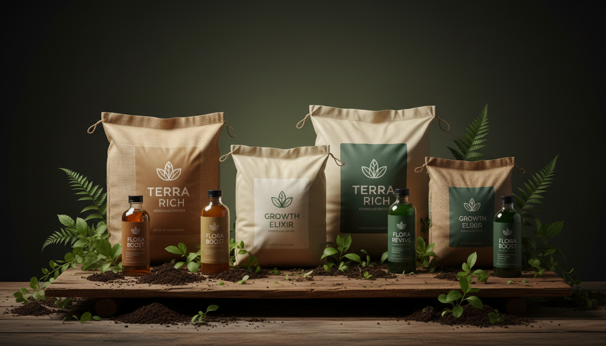
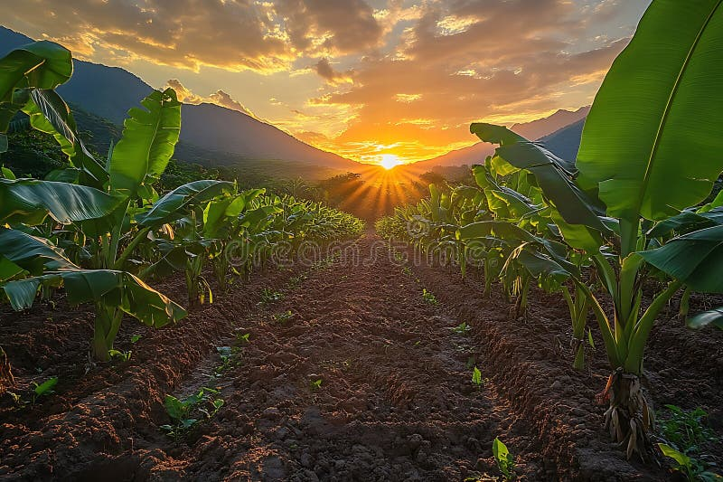
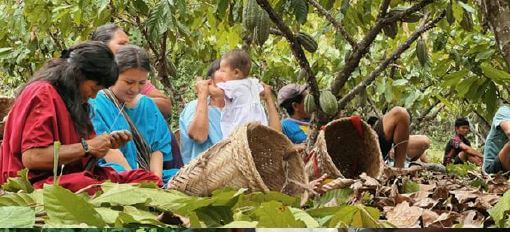
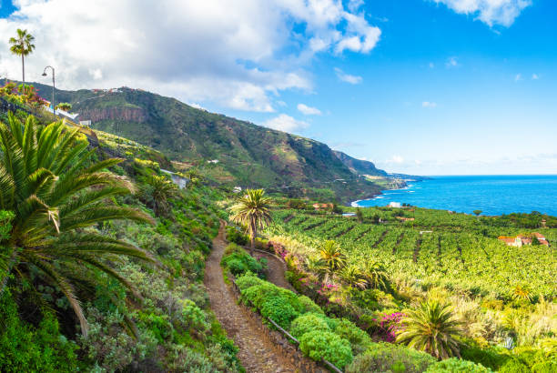
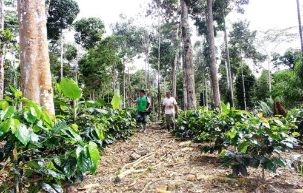
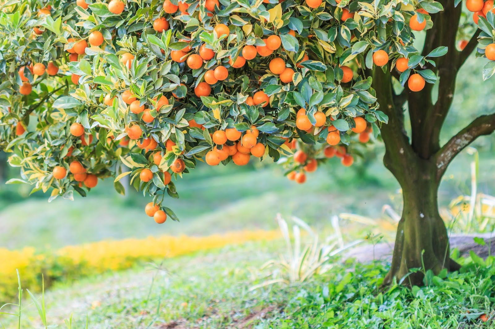

Fertilizantes
Nutrición balanceada para suelos productivos y cosechas abundantes.
Distribuimos fertilizantes, insecticidas, fungicidas y abonos de la más alta calidad para potenciar la productividad y rentabilidad de tu cultivo.
Una línea completa de productos diseñados para cada etapa del cultivo.

Nutrición balanceada para suelos productivos y cosechas abundantes.
Control eficaz de plagas con respaldo técnico profesional.
Prevención y tratamiento de enfermedades fúngicas en cultivos.
Materia orgánica y mineral para suelos sanos y sostenibles.
Una selección de nuestros productos más solicitados por agricultores de la región.
Trabajamos únicamente con marcas líderes y formulaciones aprobadas para el agro peruano.
Nuestro equipo brinda recomendaciones personalizadas según tu cultivo y zona.
Atendemos a productores en Satipo y toda la selva central con entrega oportuna.





Escríbenos por WhatsApp y un asesor te atenderá de inmediato.